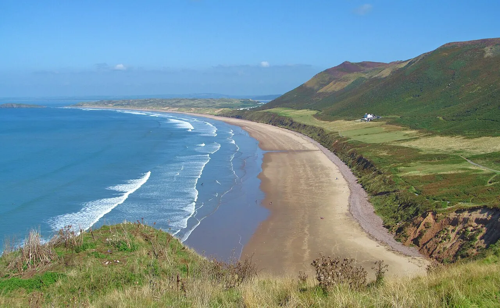

Rhossili Bay
Gower, Pays de Galles · surf, baignade

Grande baie de la péninsule de Gower, parmi les plus belles plages de Grande-Bretagne. On y surfe face à l’île de Worm’s Head.
- Lieu
- Gower, Pays de Galles
- Niveau
- Débutant
- Activités
- surf, baignade
- Type d'eau
- Mer / océan
- Coordonnées
- 51.57, -4.29 (position approximative du secteur)
Dangers à connaître
- Courants de marée forts.
- Îlot accessible seulement à marée basse.
Le conseil d'Ocean Buddy
Ne va pas sur Worm’s Head sans vérifier les horaires de marée : la chaussée se coupe.
Ouvrir dans Ocean Buddy Télécharger sur l'App Store
Source : Fiche Ocean Buddy · septembre 2026 · à vérifier localement.